Gavin Meeler Editions 什么是 Gavin Meeler 版本？ Gavin Meeler Editions 是一个 NFT（不可替代代币）系列。存储在区块链上的数字艺术品集合。 有多少 Gavin Meeler Editions 代币？ 总共有 130 个 Gavin Meeler Editions NFT。目前，20
GeckoCon 2022 是时候在 Decentraland 中使用权威来炫耀你的数字赃物了。获取我们由 Metaprints 设计的限量版 GeckoCon 2022 可穿戴 NFT！ Metaprints 是品牌通过一个简单的步骤加速其在众多 Metaverse 生态系统中的存在
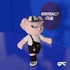 GEEKFANCYCLUB GEEKFANCYCLUB GeekFancyClub(GFC) 是一系列全身2d+3d nft。共有 8888 个图形和 300 多项功能 我们的 Phase1 nft 有 4 个特殊角色，其他属于 GFC 世界的潮流引领者，我们将在我们的 gamefi 中设置更多样
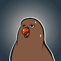 GGULLBIRDS : BUZZ FAMILY 你好。这是 Cherbirds 团队的 Cyan。 期待已久的首个 NFT 项目“BUZZ FAMILY”即将上线！ 虽然官方发布和铸造时间表尚未最终确定，但我们正在进行最终检
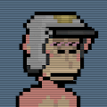 GlitchApe ▶ 什么是 GlitchApe？GlitchApe 是一个 NFT（不可替代令牌）集合。存储在区块链上的数字艺术品集合。 ▶ 存在多少 GlitchApe 代币？总共有 1,005 个
Gloomz NFT ▶ 什么是 Gloomz NFT？Gloomz NFT 是一个 NFT（Non-fungible token）集合。存储在区块链上的数字艺术品集合。 ▶ 存在多少 Gloomz NFT 代币？
GLOOPEEZ ▶ 什么是 GLOOPEEZ？GLOOPEEZ 是一个 NFT（不可替代代币）集合。存储在区块链上的数字艺术品集合。 ▶ 有多少 GLOOPEEZ 代币？总共有 2,500 个 GLOOPEEZ NF
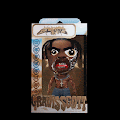 Glumps Original Glumps 是基于真实和虚构角色的独特生物。购买 Glumps 并加入我的 glumpiverse 之旅……并跟随世界转向 Glump。 Glumps 是一个 NFT（不可替代
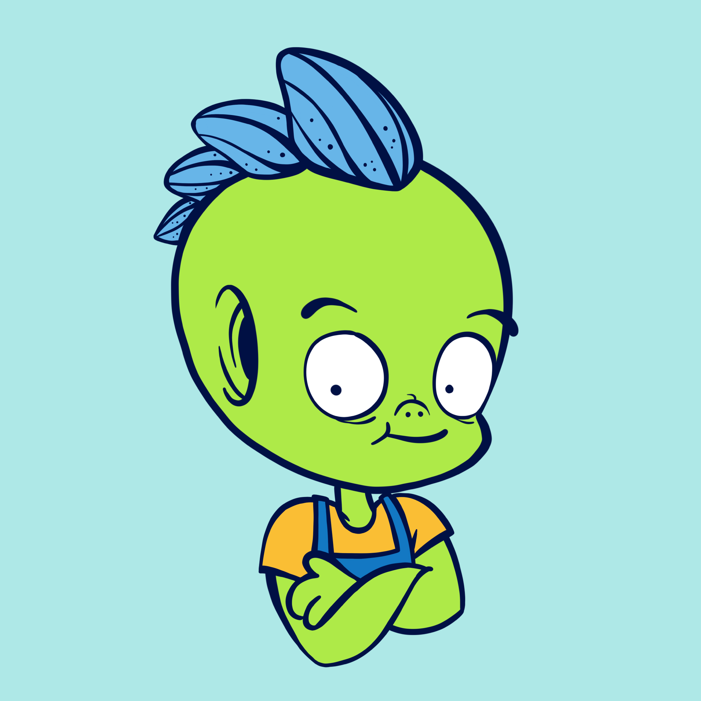 GluppersNFT ▶ 什么是 GluppersNFT？GluppersNFT 是一个 NFT（非同质代币）集合。存储在区块链上的数字艺术品集合。 ▶ GluppersNFT 代币有多少？总共有
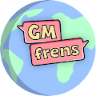 GM frens - Official ▶ 什么是 GM 朋友 - 官方？GM frens - 官方是 NFT（不可替代令牌）集合。存储在区块链上的数字艺术品集合。 ▶ 有多少 GM frens - 官方代币存在？总共有 6,900 个 GM frens -
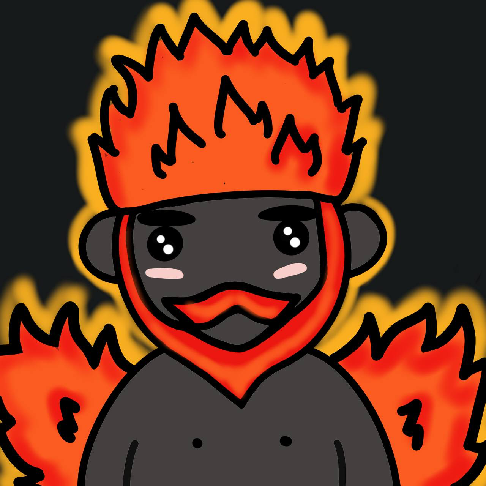 GnomePals NFT GnomePals 是 2222 个在以太坊区块链上漫游的友好花园侏儒的集合。由 16 岁的营销人员和创始人 Olly。5000 名友好的花园侏儒在以太坊区块链中漫游！ GnomePals NFT 于 2022 年
GOAT KIDz GOATz 于 2021 年 7 月推出，是有史以来第一个通货紧缩的 PFP NFT，它使所有者能够通过名为 The Forge 的流程自定义其 NFTS。GOATz 的稀缺性一直在增加，而艺术
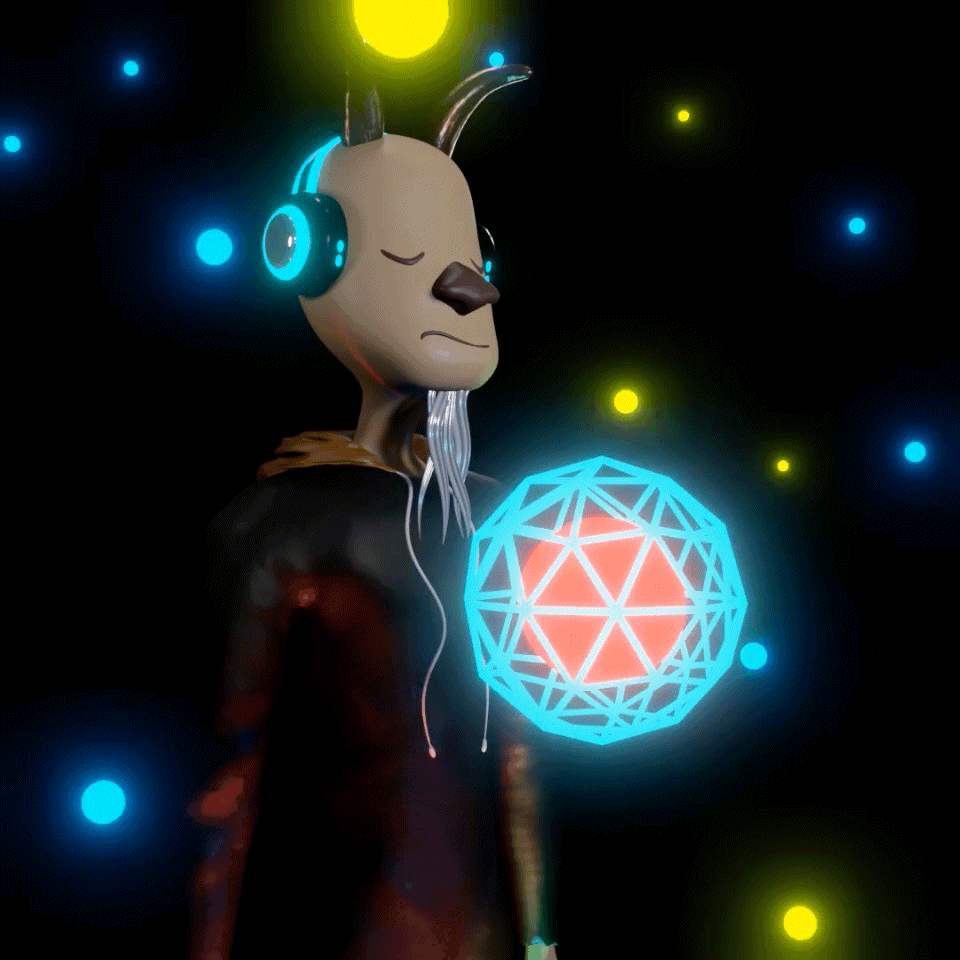 GOATATONIC ▶ 什么是山羊绒？GOATATONIC 是一个 NFT（非同质代币）集合。存储在区块链上的数字艺术品集合。 ▶ GOATATONIC 代币有多少？总共有 2 个 GOATATONIC NFT。目前
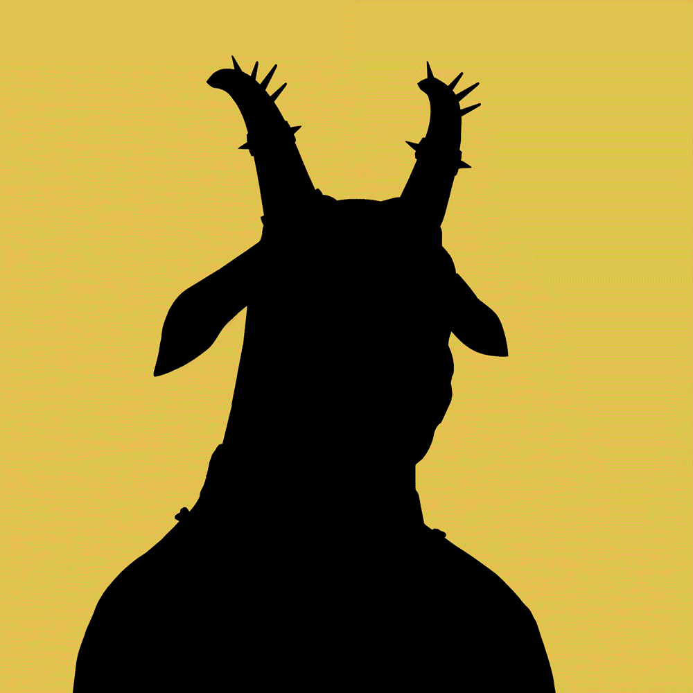 Goats4Life Goats4Life Goats4Life 是 LOOK LABS 的 420.game 第 2 季的合集。山羊需要联合起来打败坏熊。期待领土战争，山羊帮派和有趣的曲折战斗。这只是山羊杂草帝国的开始。我们是山羊。我们是军
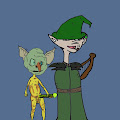 Goblin Vs Elf Goblin Vs Elf 于 2022 年 6 月 3 日首次铸造。我们目前正在追踪流通中的 2,828 个 Goblin Vs Elf 代币，这些代币尚未被烧毁或质押。我们为 Goblin Vs Elf 索引了 1,608 个独特的特征对。 购买 Goblin Vs
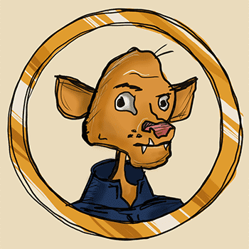 Goblincatz GoBliNcAtZ 将 RICHUR 合为一体 - Fat Catz 的衍生产品（刷新数据集）。Goblincatz 于 2022 年 6 月 10 日首次铸造。我们目前正在追踪流通中的 9,998 个 Goblincatz 代币，这些代币尚未被
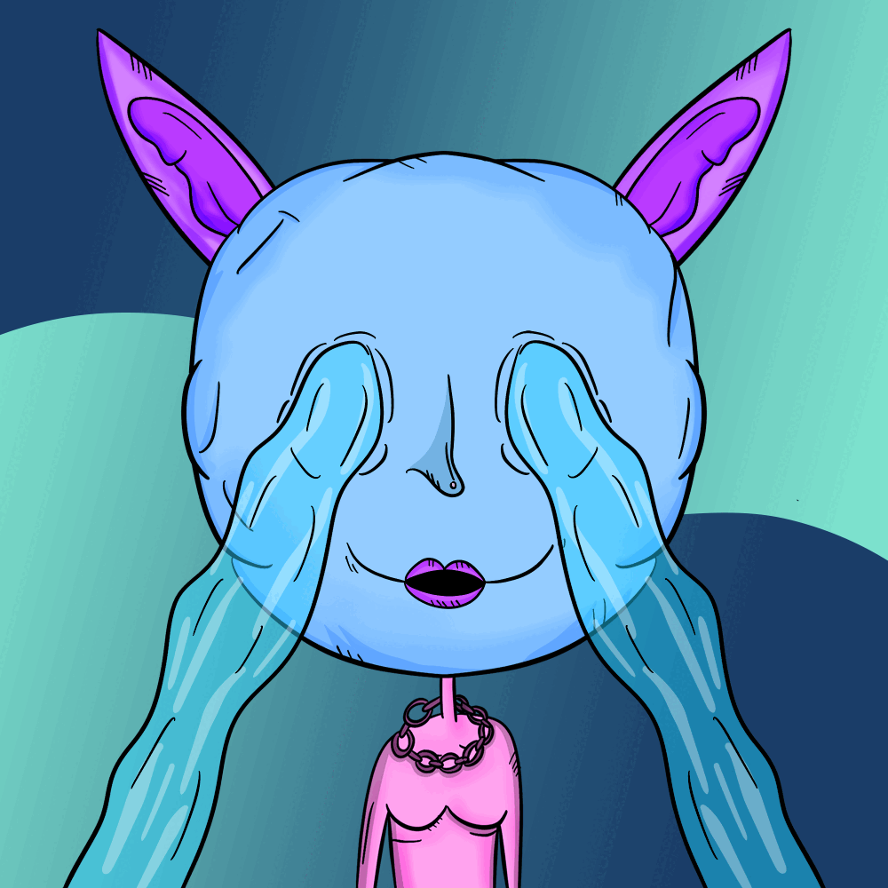 GoblinWomen.wtf GoblinWomen.wtf 于 2022 年 7 月 8 日首次铸造。灵感来自 GoblinTown + World Of Women | 每个 GoblinWomen NFT 1 GW = 0.001 ETH！我们的价格目标：每 Gw nft 1 ETH！我们将为我们的下一个项目提供免费薄荷糖
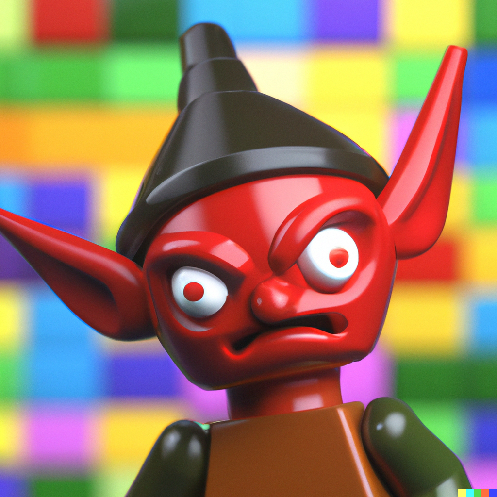 goblinworldnft Goblin World 是 555 个受乐高启发的地精在区块链中漫步的集合。goblinworldnft 于 2022 年 8 月 16 日首次铸造。我们目前正在追踪流通中的 555 个未销毁或质押
Goburin Goburin 是以太坊上 8,888 个可爱的 Goburin 的集合。从丑陋的地精、精灵和矮人大军中治愈你的眼睛。没有路线图，没有 Discord，但对少数幸运和勇敢的人有用。 Goburin 于
God Blesses NFTees 谁说上帝讨厌 NFT？5,555 个上帝保佑 NFT。 小伙伴们准备好被祝福了吗？ 我很快就要降临地球了……准备好迎接你的上帝 每个 NFTees 也是我的创作，我看
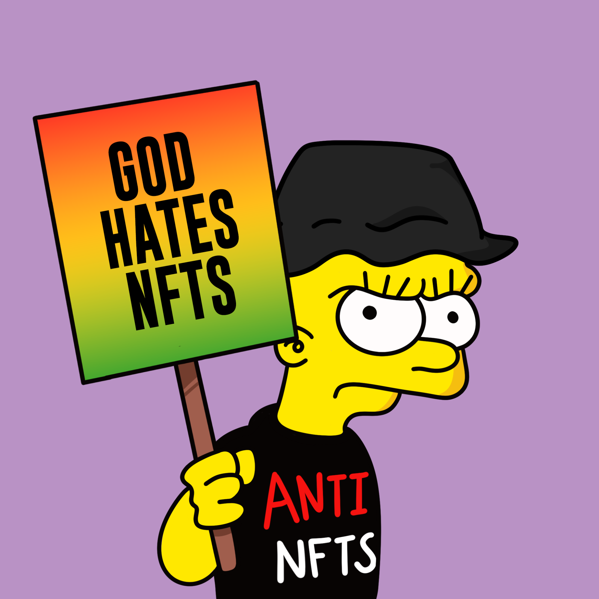 God Hates NFTs (Official) God Hates NFTs - 以太坊区块链上 2,000 个愤怒的 mfer 的集合。纯粹的乐趣 - 没有路线图或实用程序。CC0。God Hates NFT（官方）于 2022 年 6 月 21 日首次铸造。我们目前正
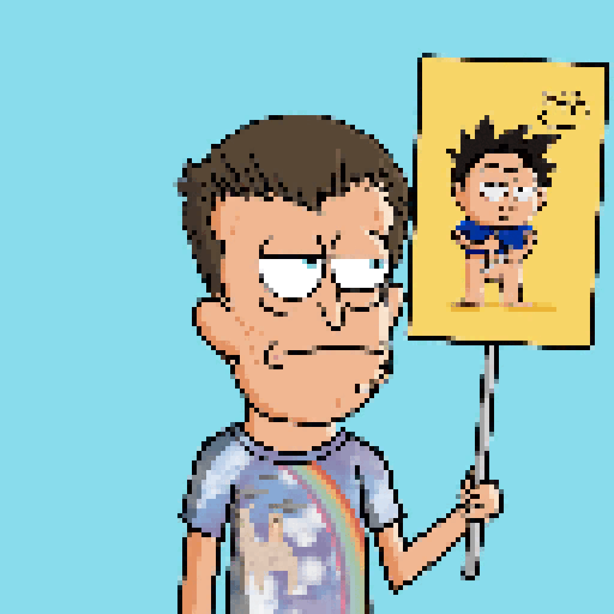 God Hates Pixel NFTees 7,777 Pixel NFT 的卡通像素风格的抗议者只是为了文化。免费薄荷，没有路线图，不和谐只为巨魔。CC0.God Hates Pixel NFTees 于 2022 年 7 月 5 日首次铸造。God Hates Pixel NFTees 于 2022
GOD Panels 他曾经是一个认真的投资者，但熊市让他疯了！Val Kilmer 的 Kamp Kilmer 自豪地宣布了 Goblinator aka Serious Investor 的诞生，他是 Gob Man Verse 中的第一个反派。当你看到他的钟摆时，你会后悔，
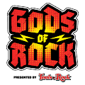 Gods Of Rock ▶ 什么是摇滚之神？Gods Of Rock 是一个 NFT（不可替代代币）系列。存储在区块链上的数字艺术品集合。 ▶ 存在多少个岩石之神代币？总共有 6,808 个 Gods Of Rock N
Godspeed Metaverse NFT 一个存在于以太坊区块链上的故事和社区驱动的 NFT 项目。艺术本身深受流行文化、街头时尚、经典漫画和漫画的影响。888 GENESIS PFP 以编程方式从 350 多个特征中生
GogglingGoblins V2 GogglingGoblins V2 于 2022 年 6 月 3 日首次发行。我们目前正在追踪 6,262 个尚未被销毁或质押的流通中的 GogglingGoblins V2 代币。我们为 GogglingGoblins V2 索引了 638 个独特的特征对。购买 GogglingGoblins V2 最常见的地方包
HobgoblinNFT Hobgoblin 是 5,555 个 NFT 在以太坊区块链上跳跃和撞击的集合。（有没有想过“像大妖精一样努力”的起源？它来自我们，大妖精家族。） 每个 Hobgoblin 都有 300 多种特征变化，它们
HobgoblinNFT(deprecated) 没有路线图？！” 我们听到你问，这是真的（有点）。 作为 NFT 领域的 CC0 领导者，路线图根本无法涵盖它。我们有很多工作要做，包括： 薄荷的金钱奖励继续发展
Hobo Beard Club 流浪汉胡子俱乐部统计 创建于大约 1 年前 367代币供应 0% 费用 过去7天没有售出Hobo Beard Club。 hobobeardclub.com |不和谐|推特| 90 元胡须俱乐部 兑换 90 年代或在c
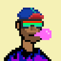 HodlHeads HodlHeads 统计数据 创建于大约 1 年前 812代币供应 5% 费用 过去 7 没有销售任何 HodlHead。 HodlHeads 是从 160 多个经常生成的 10,000 个它们的婴儿婴儿币的集合。是不可替
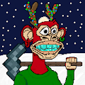 Holiday Ape Mining Club Bored Ape Mining Club 是 1,100 名随机生成的猿矿工的集合。建立你的船员，让他们继续寻找星际旅行的关键 Bananium！Genesis Bored Ape Mining Club Collection 的持有者可享受特殊
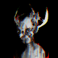 Hollow Genesis 空心创世纪统计 创建于 11 月前 55代币供应 5% 费用 过去 7 天没有销售 Hollow Genesis。 “创世纪”是Hollow的合集。 创世纪几个环节的作品和数字的原